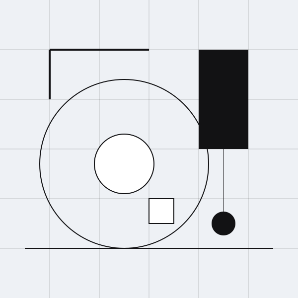

Aanbestedingen en subsidies
Voor bedrijven en organisaties die inschrijven op aanbestedingen en gebruikmaken van subsidies.
Uitkomst
[tekst volgt]
Buro van Berkel
Zelfstandig tender- en programmamanager uit Rotterdam.
Gewerkt met onder meer
Wat ik doe
Voor bedrijven en organisaties die inschrijven op aanbestedingen en gebruikmaken van subsidies.
Uitkomst
[tekst volgt]
Voor publieke en semipublieke organisaties, zoals gemeenten, provincies, woningcorporaties en netbeheerders.
Uitkomst
[tekst volgt]
Voor directie en bestuur van bedrijven, gemeenten, provincies en netbeheerders, als een traject regie mist of een keuze onderbouwing nodig heeft.
Uitkomst
[tekst volgt]
Ruimte vanaf [tekst volgt] Werk

Contact
Stuur me een bericht of mail en dan plannen we een belletje of kopje koffie.
Kom in contact